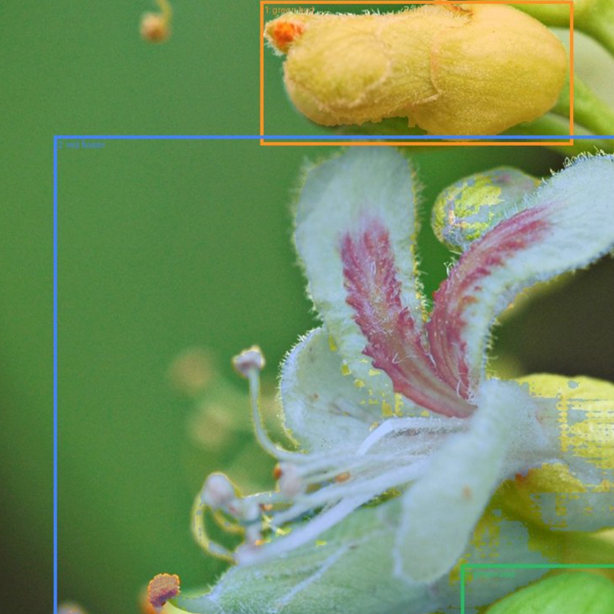

Plant Recognition System
Developing a dual-encoder architecture combining EfficientNet and BioCLIP through cross-attention feature fusion to integrate organism- and species-level representations while addressing negative transfer.
Investigating representation failures using frozen-embedding clustering, linear probes, and rotation-based local projections, while exploring active learning-guided fine-tuning to improve classification performance.
Distilling a lightweight student model for offline iOS inference and implementing cloud fallback mechanisms for ambiguous predictions.